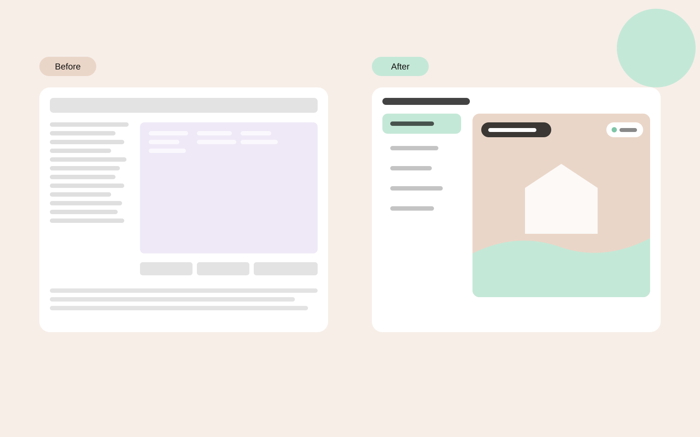

Cooling cows only where they need it
A smart cooling system for dairy cows uses cameras and AI detection to cool the cows when and where they need it. The control interface was built by the developers, and the people who used it every day found it hard to work with. I worked on the specification and the redesign together with the product manager and the developers.
What wasn’t working
- Too many parameters. Every setting was on screen at once, and it was hard to tell what mattered.
- No clear navigation or flow. Users had no obvious path through the system.
- No context. The screens did not show the barn name, the camera name or the company logo, so users could not tell where they were.
- Colors that worked against the content. The palette had nothing to do with the brand, and on the camera screens it was so light that the parameters could not be read over the image.
Farmers want to know one thing: is every camera working?
I suggested field tests, and the product manager ran them with farmers and technicians. What farmers needed most was simple: to get to every camera quickly and see that it is working. The detailed parameters mattered to technicians, and having them in everyone’s way made the system harder to use for both groups.
Less on screen, more in control
- A simple path to every camera. The main screen is a clear list of camera names. Selecting one opens its screen with a live image that refreshes every 30 seconds, so a farmer can see right away that the camera is working.
- Always know where you are. The barn name and the camera name appear on every screen, and the navigation follows one clear flow.
- A clear hierarchy on the camera screen. The image comes first and the key information sits on top of it, readable, with only what a farmer needs.
- Settings for technicians only. Parameter settings are hidden from the everyday flow and locked, so only technicians can change them.
- A visual language built on the brand. Brand colors and the company logo, with contrast that stays readable over a live camera image.

What changed
Farmers and technicians gave positive feedback on the new interface. Farmers got a quick, clear way to check each camera, and technicians kept full control of the parameters without farmers changing them by mistake.